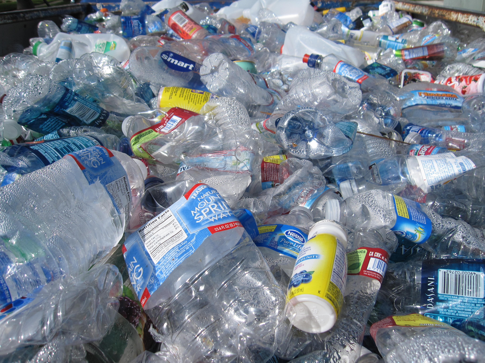
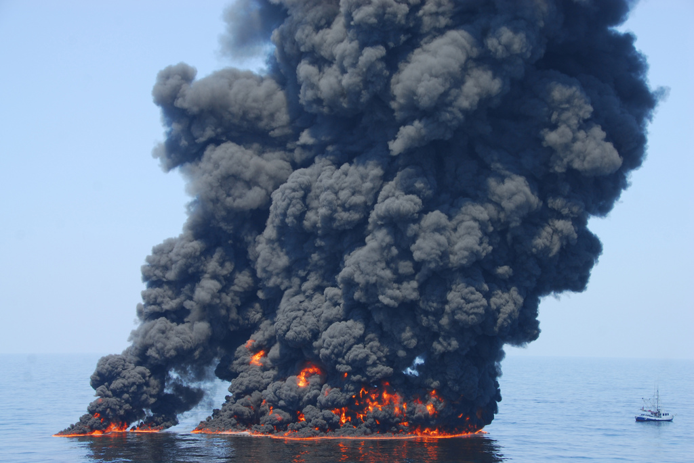
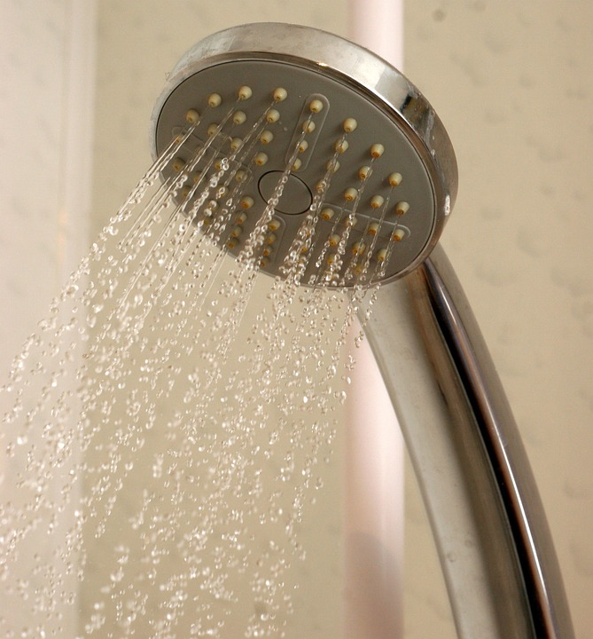

Introduction
Water pollution is when substances build up in the water to a point where it causes problems for people and animals.
There are two main types of water pollution: nonpoint-source pollution and point-source pollution. If pollution comes from one source, then it is point-source pollution. If it comes from multiple sources, then it is nonpoint-source pollution.
Sometimes it’s obvious when water has been polluted, like a major oil spill. But most of the time, it’s not.
This is an extremely concerning issue because water is essential to all life.
The Issue
Water pollution has so many sources, making it such a difficult problem to solve.
Atmosphere
Atmospheric deposition is one of the many causes of water pollution.
It is when chemicals released into the air enter the atmosphere and fall back to the earth as rain.
Sewage
Sewage is another cause.
When so much sewage is released into the environment, the nutrients from it can cause the growth of harmful algal blooms. These blooms remove the oxygen from the water and kill the life present in the water.
Biology
However, pollution is not strictly limited to chemicals. It can be biological as well.
The introduction of invasive species into water ecosystems can drastically change the environment. Because they have no natural predators outside their normal habitat, they can run rampant and crowd out native life.
Plastics
Plastic has a major impact on our lives.
In a year, 300 million tons of plastic are produced.
And of that, only 10% of that is recycled.
The remaining 90% lays abandoned in landfills and our environment.
Plastic takes approximately 400 years to degrade. With the amount of plastic we leave discarded, it would take hundreds of thousands of years to decompose.
Countries like Australia used to produce 7 billion bags until they introduced bans and taxes on plastic bags all over.
As more and more countries adopt these policies, you should move towards using reusable bags.

Oil
Deepwater Horizon, one of the most major oil spills we’ve had, was devastating.
Estimations of about 200 million gallons of oil were pushed into the water. Oil destroys the water repellency of bird’s feathers and the insulating abilities of mammals.
It exposes them to the harsh elements and endangers them. Oil also clogs the roots of plants, which means that less nutrients can get to them.
This further decimates the local environment.

What You Can Do
There’s a wide variety of ways you can help reduce water pollution.
First of all, educate yourself.
This website is a great first step on educating yourself on water pollution. Click on our "resources" tab to learn more.
You can also start off by moving towards using reusable bags instead of plastic bags.
This way, there’s less of a chance of plastic making its way into the water and endangering wildlife.
You should also make more attempts to recycle any recyclable items.
Also, when you have any hazardous waste, you should properly dispose of it instead of dumping it on the ground.
Hazardous waste can seep through the soil and get into the groundwater supply, contaminating it and reducing our access to fresh water.
At home, you should make a move towards using less water.
You should take showers because you waste less water compared to a bath.
You should also turn the water off when brushing your teeth and also fix any leaks.
All these efforts mean that you waste less water.
Be mindful of what you eat.
Look for food that is marked “line caught”, “diver caught”, “sustainably caught”, or “sustainably harvested.”

You should spread what you have learned and tell others about the cause.
Donate to reputable charities that help with water conservation efforts.
Find activities that will help with the cause.
Apps like Charity Miles are such an example, as they log the miles you run or walk and donate money to charities. You can select charities that concern water pollution.
Demand clean water!
Lobby your lawmakers to help create bills that can help stop water pollution.